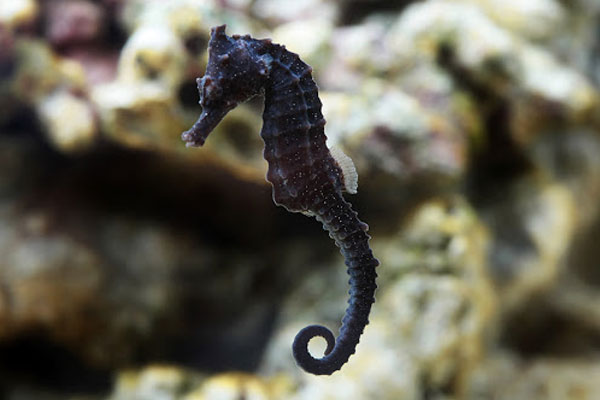

NEWS
해양보호생물
남방큰돌고래
다 큰 남방큰돌고래는 최대 2.7m
체중 230kg정도의 중형 돌고래이며 유선형 체형입니다.
짙은 회색의 등 표면은 꼬리쪽으로 갈수록 옅어지며,
복부의 색은 밝은 회색에서 백색입니다.
머리는 둥글며, 주둥이는 도드라지게 튀어나와 있습니다.
체중 230kg정도의 중형 돌고래이며 유선형 체형입니다.
짙은 회색의 등 표면은 꼬리쪽으로 갈수록 옅어지며,
복부의 색은 밝은 회색에서 백색입니다.
머리는 둥글며, 주둥이는 도드라지게 튀어나와 있습니다.
해양보호생물
장수바다거북
등딱지 길이 1.2~2.5m, 몸무게 650∼800kg으로
지구상에 사는 거북류 중 크기가 가장 큽니다.
앞·뒷다리는 지느러미 모양이고
다른 바다거북과 달리 발톱이 없습니다.
지구상에 사는 거북류 중 크기가 가장 큽니다.
앞·뒷다리는 지느러미 모양이고
다른 바다거북과 달리 발톱이 없습니다.
해양보호생물
기수갈고둥
껍데기 높이 13.5mm, 껍데기 지름 12.4mm
전체적으로 작고 겉보기에 공처럼 생겼으며,
염주알다슬기와 비슷합니다.
껍데기는 두꺼운 편이며 단단합니다.
체층이 커서 거의 전부를 차지하기 때문에
상대적으로 나탑은 낮고 작습니다.
전체적으로 작고 겉보기에 공처럼 생겼으며,
염주알다슬기와 비슷합니다.
껍데기는 두꺼운 편이며 단단합니다.
체층이 커서 거의 전부를 차지하기 때문에
상대적으로 나탑은 낮고 작습니다.
해양보호생물
거머리말
해양성 여러해살이풀 입니다.
지름 3-5mm인 땅속줄기 마디에서 뿌리를 내립니다.
잎은 두 줄로 어긋나며 길이 50-120cm,
폭 4-9mm의 긴 선형입니다.
지름 3-5mm인 땅속줄기 마디에서 뿌리를 내립니다.
잎은 두 줄로 어긋나며 길이 50-120cm,
폭 4-9mm의 긴 선형입니다.
해양보호생물
가시해마
몸길이 약 10-13cm로 해마와 비슷합니다.
가장 뚜렷한 특징은 코 주위에 있는 검은색 줄무늬입니다.
몸 빛깔은 갈색 바탕에 흰 점이 있습니다.
후두부 관상돌기는 높고 보통 5개의 가시가 있으며
관상돌기 뒤쪽에 2개의 가시가 있습니다.
한국(남부),일본,중국,싱가포르,통인도제도,
홍해 등지에 분포하고 있습니다.
가장 뚜렷한 특징은 코 주위에 있는 검은색 줄무늬입니다.
몸 빛깔은 갈색 바탕에 흰 점이 있습니다.
후두부 관상돌기는 높고 보통 5개의 가시가 있으며
관상돌기 뒤쪽에 2개의 가시가 있습니다.
한국(남부),일본,중국,싱가포르,통인도제도,
홍해 등지에 분포하고 있습니다.

해양보호생물
복해마
몸길이 약 18cm이며, 몸은 해마와 비슷한데,
등지느러미 기조수가 해마보다 많아 구분이 됩니다.
몸통은 옆으로 납작하고 몸 높이가 약간 높아 둥급니다.
꼬리자루는 원통형으로 길고 가늘며, 몸 전체는 딱딱한
골판이 둥글게 싸고 있습니다.
등지느러미 기조수가 해마보다 많아 구분이 됩니다.
몸통은 옆으로 납작하고 몸 높이가 약간 높아 둥급니다.
꼬리자루는 원통형으로 길고 가늘며, 몸 전체는 딱딱한
골판이 둥글게 싸고 있습니다.
해양보호생물
청다리도요사촌
몸길이 29~32cm이다. 다리는 노란색이며
머리, 등, 날개는 회색이다.
번식기가 되면 등과 날개에
흰색 반점 무늬가 생기고 선명해지며,
목 아래쪽에 검은색의 초승달 모양의 반점 무늬가 생긴다.
머리, 등, 날개는 회색이다.
번식기가 되면 등과 날개에
흰색 반점 무늬가 생기고 선명해지며,
목 아래쪽에 검은색의 초승달 모양의 반점 무늬가 생긴다.